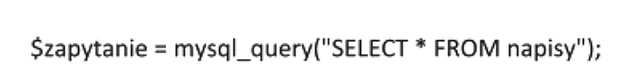
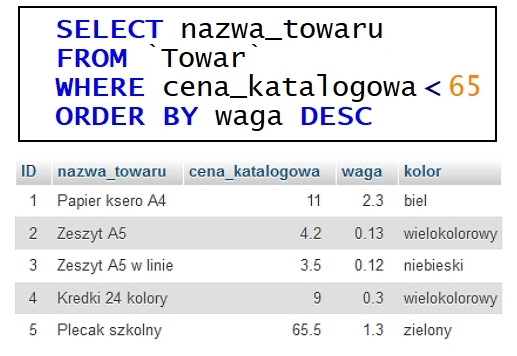
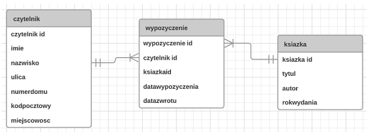
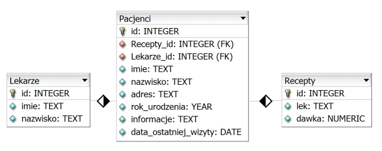
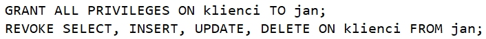
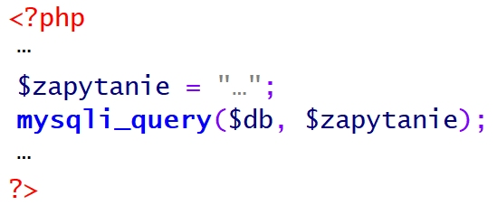

Pytanie nr 1
Jak nazywa się podzbiór strukturalnego języka zapytań, związany z formułowaniem zapytań do bazy danych za pomocą polecenia SELECT?
A. SQL DML (ang. Data Manipulation Language)
B. SQL DDL (ang. Data Definition Language)
C. SQL DCL (ang. Data Control Language)
D. SQL DQL (ang. Data Query Language)
Pytanie nr 2
Jakie sa nazwy typowych poleceń języka zapytań SQL, związane z wykonywaniem operacji na danych SQL DML (np.: umieszczanie danych w bazie, kasowanie dokonywanie zmian w danych)?
A. SELECT, SELECT INTO
B. ALTER, CREATE, DROP
C. DENY, GRANT, REVOKE
D. DELETE, INSERT, UPDATE
Pytanie nr 3
Jak posortowana będzie lista, utworzona ze wszystkich kolumn tabeli uczniowie i zawierająca uczniów ze średnią większą od 5, która zostanie zwrócona jako wynik przedstawionego zapytania?
A. Rosnąca według parametru klasa
B. Malejąco według parametru klasa
C. Rosnaco według parametru srednia
D. Malejąco według parametru srednia

Pytanie nr 4
Według którego parametru oraz dla ilu tabel zostaną zwrócone wiersze na liście w wyniku przedstawionego zapytania?
A. Według parametru wyrob_id wyłącznie dla trzech tabel
B. Według parametru wyrob_id dla wyłącznie dla trzech tabel
C. Według parametru nr_id wyłącznie dla trzech tabel
D. Według parametru nr_id dla wszystkich tabel

Pytanie nr 5
Który z obiektów relacyjnej bazy danych, będący kodem języka SQL, może być wywoływany w zapytaniach modyfikujących kolumny danych widoczne jako tabela, bez względu na to czy jest tworzony programowo, czy dynamicznie?
A. Reguła
B. Wyzwalacz
C. Procedura składowa
D. Funkcja zdefiniowana
Pytanie nr 6
Jak nazywa się element bazy danych, za pomocą którego można jedynie odczytać dane z bazy, prezentując je w postaci tekstu lub wykresu?
A. Tabela
B. Raport
C. Zapytanie
D. Formularz
Pytanie nr 7
Jakiego typu specjalizowane oprogramowanie narzędziowe należy zainstalować, aby umożliwić wykonywanie jego użytkownikowi operacji na zgromadzonych danych?
A. Klucz obcy
B. System Zarządzania Bazą Danych (SZBD)
C. Obiektowy System Zarządzania Bazą Danych
D. Otwarty mechanizm komunikacji bazy danych
Pytanie nr 8
Co należy zastosować w organizacji danych, aby zapytania w bazie danych były wykonywane szybciej?
A. Reguły
B. Indeksy
C. Wartości domyślne
D. Klucze podstawowe
Pytanie nr 9
W programie Microsoft Access formą zabezpieczeń dostępu do danych związaną z tabelą i kwerendą jest
A. stosowanie makr
B. przypisanie uprawnień
C. określanie przestrzeni tabel
D. wprowadzenie limitów przestrzeni dyskowej
Pytanie nr 10
Które z wymienionych osób odpowiadają za przygotowanie systemu bazy danych do pracy produkcyjnej w sposób ciągły, zarządzanie użytkownikami i instalowanie nowych wersji systemu bazodanowego?
A. Projektanci narzędzi deweloperskich
B. Administratorzy systemu bazy danych
C. Administratorzy serwerów i sieci komputerowych
D. Projektanci i programiści Systemu Zarządzania Bazą Danych.
Pytanie nr 11
Z jakimi mechanizmami nadawania zabezpieczeń, dającymi możliwości wykonywania operacji na bazie danych, związane są zagadnienia zarządzania kontami, użytkownikami i uprawnieniami?
A. Z regułami
B. Z atrybutami
C. Z przywilejami obiektowymi
D. Z przywilejami systemowymi
Pytanie nr 12
Metoda udostępniania bazy danych w programie Microsoft Access, dotycząca wszystkich obiektów bazy umieszczonych na dysku sieciowym i używanych jednocześnie przez różne osoby nosi nazwę
A. folderu sieciowego
B. serwera bazy danych
C. dzielonej bazy danych
D. witryny programu SharePoint
Pytanie nr 13
Jakie należy posiadać uprawnienia, aby wykonać i odtworzyć kopię zapasową bazy danych Microsoft SQL Server 2005 Express?
A. Users
B. Security users
C. Użytkownik lokalny
D. Administrator systemu
Pytanie nr 14
Co to jest DBMS?
A. Strukturalny język zapytań kierowanych do bazy danych
B. System zarządzania bazą danych
C. Obiektowy język programowania do generowania stron www
D. Kaskadowy arkusz stylów do opisu wyglądu strony www
Pytanie nr 15
Wskaż prawidłową kolejność tworzenia bazy danych
A. Określenie celu, utworzenie relacji, stworzenie tabel, normalizacja
B. Określenie celu, normalizacja, utworzenie relacji, stworzenie tabel
C. Określenie celu, stworzenie tabel, utworzenie relacji, normalizacja
D. Określenie celu, normalizacja, stworzenie tabel, utworzenie relacji
Pytanie nr 16
Wskaż typ relacji pomiędzy tabelami: Tabela1 i Tabela3
A. Jeden do jednego
B. Wiele do jednego
C. Jeden do wielu
D. Wiele do wielu

Pytanie nr 17
Które z pól są umieszczone w formularzu?
A. Textarea, Option, Input(Chechbox), Input(Checkbox), Input(Submit) Input(Reset)
B. Input(Text), Select, Input(Radio), Input(Radio), Input(Submit), Input(Reset)
C. Textarea, Select, Input(Radio), Input(Radio), Input(Reset), Input(Submit)
D. Input(Text), Input(Chechbox), Select, Select, Input(Submit), Input(Reset)

Pytanie nr 18
Którą z właściwości pola tabeli należy zdefiniować, aby pole przyjmowało dane składające się wyłącznie z cyfr?
A. Tagi inteligentne
B. Wartość domyślną
C. Maskę wprowadzania
D. Regułę sprawdzania poprawności

Pytanie nr 19
Którego ze słów kluczowych języka SQL należy użyć, aby wyeliminować duplikaty?
A. LIKE
B. DISTINCT
C. ORDER BY
D. GROUP BY
Pytanie nr 20
Które ze stwierdzeń prawidłowo charakteryzuje zdefiniowaną tabelę: CREATE TABLE dane (kolumna INTEGER(3));
A. Tabela o nazwie dane posiada trzy kolumny liczb całkowitych
B. Tabela o nazwie dane posiada jedną kolumnę liczb całkowitych
C. Tabela posiada jedną kolumnę zawierającą trzy elementowe tablice
D. Kolumny tabeli dane nazywają się: kolumna1, kolumna2, kolumna3
Pytanie nr 21
Polecenie REVOKE SELECT ON nazwa1 FROM nazwa2 w języku SQL umożliwia
A. nadanie uprawnień z użyciem zdefiniowanego schematu
B. odbieranie uprawnień użytkownikowi
C. usuwanie użytkownika z bazy
D. nadawanie praw do tabeli
Pytanie nr 22
Które polecenie wydane z konsoli systemu operacyjnego, zawierające w swojej składni opcję --repair, umożliwia naprawę bazy danych?
A. mysqlcheck
B. mysqldump
C. truncate
D. create
Pytanie nr 23
Które polecenie wydane z konsoli systemowej dokona przywrócenia bazy danych?
A. mysqldump -u root -p baza > kopia.sql
B. mysqldump -u root -p baza < kopia.sql
C. mysql -u root -p baza < kopia.sql
D. mysql -u root -p baza > kopia.sql
Pytanie nr 24
Polecenie w języku SQL GRANT ALL PRIVILEGES ON klienci TO pracownik
A. nadaje uprawnienie grupie klienci do tabeli pracownik
B. odbiera wszystkie uprawnienia pracownikowi do tabeli klienci
C. skopiuje uprawnienia z grupy klienci na użytkownika pracownik
D. nadaje wszystkie uprawnienia do tabeli klienci użytkownikowi pracownik
Pytanie nr 25
Typ stało-znakowy w języku SQL to
A. char
B. text
C. time
D. bool
Pytanie nr 26
Operator arytmetyczny modulo w języku SQL to
A. /
B. ||
C. &
D. %
Pytanie nr 27
Polecenie w języku SQL ALTER TABLE USA... ma za zadanie
A. usunięcie tabeli USA
B. modyfikację tabeli USA
C. nadpisanie starej tabeli USA
D. utworzenie nowej tabeli USA
Pytanie nr 28
Kod: SELECT imie, pesel, wiek FROM dane WHERE wiek IN (18,30) spowoduje wybranie:
A. imion, nazwisk i numerów PESEL osób w wieku poniżej 18 lat
B. imion, numerów PESEL i wieku osób z przedziału od 18 do 30 lat
C. imion, numerów PESEL i wieku osób posiadających powyżej 30 lat
D. imion, numerów PESEL i wieku osób w wieku równym 18 lub 30 lat
Pytanie nr 29
Aby policzyć wszystkie wiersze tabeli Koty należy użyć polecenia:
A. SELECT COUNT(*) FROM Koty
B. SELECT ROWNUM() FROM Koty
C. SELECT COUNT(Koty) AS ROWNUM
D. SELECT COUNT(ROWNUM) FROM Koty
Pytanie nr 30
Aby podczas tworzenia tabeli utworzyć klucz obcy na wielu kolumnach, należy użyć polecenia
A. CONSTRAINT(nazwisko,imie) FOREIGN KEY REFERENCES osoby (nazwisko, imie)
B. CONSTRAINT(nazwisko,imie) FOREIGN REFERENCES KEY osoby (nazwisko, imie)
C. CONSTRAINT fk_osoba_uczen FOREIGN KEY (nazwisko, imie) REFERENCES osoby (nazwisko,imie)
D. CONSTRAINT fk_osoba_uczen FOREIGN KEY ON (nazwisko, imie) REFERENCES osoby (nazwisko,imie)
Pytanie nr 31
W algebrze relacji operacja selekcji polega na
A. wyelminowaniu pustych wierszy
B. wybraniu krotek spełniających określone warunki
C. wybraniu krotek niezawierających wartości NULL
D. wyelminowaniu krotek z powtarzającymi się polami
Pytanie nr 32
Relacja w bazach danych jest
A. logicznym połączeniem tabel
B. kluczem głównym w relacji tabel
C. algebraicznym połączeniem tabel
D. połączeniem dwóch pól jednej tabeli
Pytanie nr 33
Wskaż poprawną kolejność etapów projektowania relacyjnej bazy danych
A. Selekcja, Określenie relacji, Określenie kluczy podstawowych tabel, Określenie zbioru danych
B. Określenie relacji, Określenie kluczy podstawowych tabel, Selekcja, Określenie zbioru danych
C. Określenie kluczy podstawowych tabel, Określenie zbioru danych, Selekcja, Określenie relacji
D. Określenie zbioru danych, Selekcja, Określenie kluczy podstawowych tabel, Określenie relacji
Pytanie nr 34
Formularze do obsługi baz danych tworzy się w celu
A. raportowania danych
B. wyszukiwania wierszy spełniających dane kryteria
C. wprowadzenia powiązań w relacyjnych bazach danych
D. wygodniejszego wprowadzania, edytowania i usuwania danych
Pytanie nr 35
Integralność referencyjna w modelu relacyjnych baz danych oznacza, że
A. wartość klucza głównego oraz klucza obcego nie jest pusta
B. klucz główny lub klucz obcy nie zawierają wartości NULL
C. każdemu kluczowi głównemu odpowiada dokładnie jeden klucz obcy w tabeli lub tabelach powiązanych
D. wartość klucza obcego w danej tabeli musi być albo równa wartości klucza głównego w tabeli z nia powiązanej albo równa wartości NULL
Pytanie nr 36
Funkcja zapisana językiem PHP służy do
A. połączenia z bazą danych
B. ustawienia hasła do bazy danych
C. zabezpieczenia bazy danych
D. pobrania danych z bazy danych

Pytanie nr 37
Kwerenda pozwalająca na wprowadzenie zmian w wielu rekordach lub przeniesienie wielu rekordów przy użyciu pojedynczej operacji, nosi nazwę kwerendy
A. krzyżowej
B. funkcjonalnej
C. wybierającej
D. parametrycznej
Pytanie nr 38
Które z poleceń naprawi uszkodzoną tabelę w języku SQL?
A. REGENERATE TABLE tbl_name
B. REPAIR TABLE tblname
C. OPTIMIZE TABLE tbl_name
D. ANALYZE TABLE tbl_name
Pytanie nr 39
Aby stworzyć tabelę w bazie danych, należy zastosować polecenie SQL
A. ADD TABLE
B. NEW TABLE
C. PLUS TABLE
D. CREATE TABLE
Pytanie nr 40
W celu stworzenia relacji wiele do wielu łączącej tabele A i B wystarczy, że
A. tabela A będzie zawierała te same pola co tabela B
B. wiele rekordów z tabeli A zduplikuje się w tabeli B
C. zdefiniuje się trzecią tabelę z kluczami obcymi do tabel A i B
D. tabelę A połączy się z tabelą B poprzez zdefiniowanie kluczy obcych
Pytanie nr 41
W celu zapewnienia spójności danych w bazie programu Microsoft Access należy skorzystać
A. z więzów integralności
B. z kwerendy aktualizującej
C. z defragmentacji bazy
D. z archiwizacji bazy
Pytanie nr 42
Które z poleceń umożliwia dodanie kolumny zadaniekompletne do tabeli zadania?
A. ALTER TABLE zadania ADD COLUMN zadaniekompletne int
B. ADD COLUMN zadaniekompletne WITH zadania
C. CREATEINDEX zadania ADD COLUMN zadaniekompletne int
D. INSERT INTO zadania VALUES zadaniakompletne
Pytanie nr 43
W bazie danych, w celu uporządkowania listy uczniów według roku urodzenia, należy użyć polecenia
A. SELECT imie,nazwisko,klasa from uczniowie group by rok_urodzenia
B. SELECT imie,nazwisko,klasa from uczniowie order by rok_urodzenia
C. SELECT imie,nazwisko,klasa from uczniowie order by nazwisko
D. SELECT imie,nazwisko,klasa from uczniowie where rok_urodzenia = 1994
Pytanie nr 44
Wskaż dwa sposoby zabezpieczenia bazy danych Microsoft Access
A. Ustalanie hasła do otwarcia bazy danych oraz zabezpieczeń na poziomie użytkownika
B. Zaszyfrowanie pliku bazy danych oraz SMSy z kodem autoryzującym
C. Funkcje anonimowe oraz ustalenie hasła otwarcia bazy danych
D. Ustalenie zabezpieczeń na poziomie użytkownika oraz sesji
Pytanie nr 45
W języku SQL przywilej SELECT polecenia GRANT pozwala użytkownikowi baz danych na
A. odczyt danych z tabeli
B. tworzenie tabeli
C. usunięcie danych z tabeli
D. modyfikowanie danych w tabeli
Pytanie nr 46
Baza danych zawiera tabelę o nazwie pracownicy o polach: nazwisko, imie, pensja, wiek. Jak wygląda składnia polecenia wyznaczającego średnią pensję pracowników?
A. select AVG (nazwisko) into pensja
B. select VAR (pracownicy) into pensja
C. select AVG (pensja) from pracownicy
D. select VAR (pensja) from nazwisko
Pytanie nr 47
Polecenie SQL o treści: UPDATE artykuly SET cena = cena * 0.7 WHERE kod = 2; oznacza
A. w tabeli artykuly obniża wartość każdego pola cena o 30% dla wszystkich artykułów
B. w tabeli artykuly obniża wartość każdego pola cena dla którego pole kod jest równe 2
C. wprowadzenie w tabeli artykuly nowych pól cena i kod
D. wprowadzenie w tabeli artykuly pola o nazwie cena ze znacznikiem kod
Pytanie nr 48
Instrukcja DROP języka SQL ma za zadanie
A. usunąć istniejący obiekt
B. zmienić parametry obiektu
C. zaktualizować dane obiektu
D. dodać nowy obiekt
Pytanie nr 49
Baza danych zawiera tabelę uczniowie z polami: imie, nazwisko, klasa. Aby odnaleźć imiona i nazwiska tych uczniów, których nazwiska rozpoczynają się literą M, należy zastosować polecenie SQL
A. SELECT nazwisko, imie FROM uczniowie WHERE nazwisko IN "M%";
B. SELECT nazwisko, imie FROM uczniowie WHERE nazwisko LIKE "M%";
C. SELECT nazwisko, imie FROM uczniowie ORDER BY nazwisko = "M%";
D. SELECT nazwisko, imie FROM uczniowie ORDER BY nazwisko IN "M%";
Pytanie nr 50
Baza danych zawiera tabele artykuły z polami: nazwa, typ, producent, cena. Aby wyświetlić wszystkie nazwy artykułów wyłącznie typu pralka, dla których cena jest z przedziału 1000 PLN i 1500 PLN, należy zastosować polecenie
A. SELECT nazwa FROM artykuly WHERE typ="pralka" AND cena FROM 1000 TO 1500;
B. SELECT nazwa FROM artykuly WHERE typ="pralka" OR cena BETWEEN 1000 OR 1500;
C. SELECT nazwa FROM artykuly WHERE typ="pralka" OR cena BETWEEN 1000 AND 1500;
D. SELECT nazwa FROM artykuly WHERE typ="pralka" AND cena BETWEEN 1000 AND 1500;
Pytanie nr 51
Wartość pola tabeli pełniącego rolę klucza podstawowego
A. musi być unikalna
B. jest zawsze typu numerycznego
C. służy do szyfrowania zawartości tabeli
D. może przyjmować wartość pustą (NULL)
Pytanie nr 52
Aby utworzyć relację jeden do wielu, w tabeli po stronie wiele, należy zdefiniować
A. klucz obcy wskazujący na klucz obcy tabeli po stronie jeden
B. klucz sztuczny odnoszący się do kluczy podstawowych obu tabel
C. klucz obcy wskazujący na klucz podstawowy tabeli po stronie jeden
D. klucz podstawowy wskazujący na klucz podstawowy tabeli po stronie jeden
Pytanie nr 53
Narzędziem służącym do grupowania i prezentowania informacji z wielu rekordów w celu ich drukowania lub rozpowszechniania jest
A. raport
B. kwerenda
C. formularz
D. makropolecenie
Pytanie nr 54
Aby uprościć wprowadzenie i edytowanie danych w tabeli, należy zdefiniować
A. kwerendę SELECT
B. formularz
C. raport
D. filtr
Pytanie nr 55
Baza danych 6-letniej szkoły podstawowej zawiera tabelę szkola z polami: imie, nazwisko, klasa. Wszyscy uczniowie klas 1-5 zdali do następnej klasy. Aby zwiększyć wartość w polu klasa o 1 należy użyć polecenia
A. SELECT szkola FROM klasa=klasa+1 WHERE klasa >=1 AND klasa <=5;
B. SELECT nazwisko, imie FROM klasa=klasa+1 WHERE klasa>1 OR klasa <5;
C. UPDATE szkola SET klasa=klasa+1 WHERE klasa>=1 AND klasa <=5;
D. UPDATE nazwisko, imie SET klasa=klasa+1 WHERE klasa>1 OR klasa<5;
Pytanie nr 56
Uprawnienia obiektowe, nadawane użytkownikom serwera bazy danych, mogą pozwalać lub zabraniać
A. dziedziczyć uprawnienia
B. modyfikować role i konta użytkowników
C. wykonywać instrukcje, takie jak tworzenie kopii zapasowej
D. wykonywać operacje na bazie, takie jak wstawanie lub modyfikowanie danych
Pytanie nr 57
Przed wykonaniem kopii bezpieczeństwa bazy danych, tak aby kopia ta była poprawna i możliwa do późniejszego odtworzenia, należy sprawdzić
A. możliwość udostępnienia bazy danych
B. prawa dostępu do serwera bazy danych
C. poprawność składni zapytań
D. spójność bazy danych
Pytanie nr 58
W MS SQL Server polecenie RESTORE DATABASE służy do
A. odtworzenia bazy danych z kopii bezpieczeństwa
B. odświeżenia bazy danych z kontrolą więzów integralności
C. przebudowania bazy danych w oparciu o buforowane dane
D. usunięcia bazy danych z serwera centralnego subskrybenta
Pytanie nr 59
Polecenie pg_connect języka PHP służy do połączenia z bazą
A. mySQL
B. MS SQL
C. PostgreSQL
D. MS ACCESS
Pytanie nr 60
W języku PHP pobrano z bazy danych wyniki działania kwerendy za pomocą polecenia mysql_query(). Aby otrzymać ze zwróconej kwerendy wierszy danych, należy zastosować polecenie:
A. mysql_field_len()
B. mysql_list_fields()
C. mysql_fetch_row()
D. mysql_fetch_lengths()
Pytanie nr 61
W języku SQL polecenie INSERT INTO
A. dodaje tabelę
B. dodaje pola do tabeli
C. wprowadza dane do tabeli
D. aktualizuje rekordy określoną wartością
Pytanie nr 62
W języku SQL klauzula DISTINCT instrukcji SELECT sprawi, że zwrócone dane
A. zostaną posortowane
B. nie będą zawierały powtórzeń
C. będą spełniały określony warunek
D. będą pogrupowane według określonego pola
Pytanie nr 63
Zdefiniowano bazę danych z tabelą sklepy o polach: nazwa, ulica, miasto, branza. Aby wyszukać wszystkie nazwy sklepów spożywczych zlokalizowanych wyłącznie we Wrocławiu, należy posłużyć się kwerendą:
A. SELECT sklepy FROM nazwa WHERE branza="spożywczy" BETWEEN miasto="Wrocław";
B. SELECT sklepy FROM branza="spożywczy" WHERE miasto="Wrocław";
C. SELECT nazwa FROM sklepy WHERE branza="spozywczy" OR miasto="Wrocław";
D. SELECT nazwa FROM sklepy WHERE branza="spozywczy" AND miasto="Wrocław";
Pytanie nr 64
Zdefiniowano bazę danych z tabelą podzespoły o polach: model, producent, typ, cena. Aby wyświetlić wszystkie modele pamięci RAM firmy Kingston w kolejności od najtańszej do najdroższej, należy posłużyć się kwerendą:
A. SELECT model FROM podzespoly WHERE typ="RAM" AND producent="Kingston" ORDER BY cena ASC;
B. SELECT model FROM podzespoly WHERE typ="RAM" AND producent="Kingston" ORDER BY cena DESC;
C. SELECT model FROM podzespoly WHERE typ="RAM" OR producent="Kingston" ORDER BY cena DESC;
D. SELECT model FROM producent WHERE typ="RAM" OR producent="Kingston" ORDER BY podzespoly ASC;
Pytanie nr 65
W celu przyspieszenia operacji na bazie danych należy do pól często wyszukiwanych lub sortowanych
A. utworzyć indeks
B. dodać klucz obcy
C. dodać więzy integralności
D. stworzyć osobną tabelę przechowującą tylko te pola
Pytanie nr 66
Jednoznacznym identyfikatorem rekordu w bazie danych jest pole
A. klucza podstawowego
B. klucza obcego
C. numeryczne
D. relacji
Pytanie nr 67
Zdefiniowano bazę danych z tabelą mieszkancy o polach: nazwisko, imie, miasto. Następnie stworzono następujące zapytanie do bazy: SELECT nazwisko, imie FROM mieszkancy WHERE miasto="Poznań" UNION ALL SELECT nazwisko, imie FROM mieszkancy WHERE miasto="Kraków"; Wskaż zapytanie, które zwróci identyczne dane:
A. SELECT nazwisko, imie FROM mieszkancy AS "Poznań" OR "Kraków";
B. SELECT nazwisko, imie FROM mieszkancy WHERE miasto HAVING "Poznań" OR "Kraków";
C. SELECT nazwisko, imie FROM mieszkancy WHERE miasto="Poznań" OR miasto="Kraków";
D. SELECT nazwisko, imie FROM mieszkancy WHERE miasto BETWEEN "Poznań" OR "Kraków";
Pytanie nr 68
W bazie danych sklepu istnieje tabela artykuly zawierająca pole o nazwie nowy. Aby to pole wypełnić wartościami TRUE dla każdego rekordu, należy zastosować kwerendę
A. UPDATE artykuly SET nowy=TRUE;
B. INSERT INTO artykuly VALUE nowy=TRUE;
C. UPDATE nowy FROM artykuly VALUE TRUE;
D. INSERT INTO nowy FROM artykuly SET TRUE;
Pytanie nr 69
W MS SQL Server predefiniowana rola o nazwie dbcreator pozwala użytkownikowi na
A. zarządzanie plikami na dysku
B. zarządzanie bezpieczeństwem systemu
C. tworzenie, modyfikowanie, usuwanie i odzyskiwanie bazy danych
D. wykonywanie każdej operacji na serwerze i posiadanie prawa własności każdej bazy
Pytanie nr 70
Aby odebrać prawa dostępu do serwera MySQL, należy posłużyć się instrukcją
A. USAGE
B. GRANT
C. DELETE
D. REVOKE
Pytanie nr 71
Za pomocą polecenia BACKUP LOG w MS SQL Server można
A. wykonać pełną kopię bezpieczeństwa
B. zalogować sie do kopii bezpieczeństwa
C. wykonać kopię bezpieczeństwa dziennika transakcyjnego
D. przeczytać komunikaty wygenerowane podczas tworzenia kopii
Pytanie nr 72
Polecenie DBCC CHECKDB("sklepAGD", Repair_fast) w MS SQL Server
A. sprawdzi spójność określonej tabeli
B. sprawdzi spójność bazy danych i naprawi uszkodzone indeksy
C. sprawdzi spójność bazy danych i wykona kopię bezpieczeństwa
D. sprawdzi spójność określonej tabeli i naprawi uszkodzone rekordy
Pytanie nr 73
Aby naprawić bazę danych w MySQL, należy użyć polecenia
A. FIX
B. REPAIR
C. UPDATE
D. CHANGE
Pytanie nr 74
W poleceniu CREATE TABLE języku SQL atrybut określający, która kolumna tabeli jest kluczem podstawowym, to
A. UNIQUE
B. MAIN KEY
C. PRIMARY KEY
D. IDENTITY FIELD
Pytanie nr 75
Dana jest tabela psy o polach: imie, rasa, telefon_wlasciciela, rok_szczepienia. Aby wyszukać telefony właścicieli, których psy były szczepione przed 2015 rokiem, należy użyć polecenia SQL
A. SELECT psy FROM rok_szczepienia < 2015
B. SELECT imie, rasa FROM psy WHERE rok_szczepienia > 2015
C. SELECT telefon_wlasciciela FROM psy WHERE rok_szczepienia < 2015
D. SELECT telefon_wlasciciela FROM psy WHERE rok_szczepienia > 2015
Pytanie nr 76
Na rysunku została przedstawiona relacja jeden do wielu. Łączy ona
A. klucz obcy rezyserzy_id tabeli filmy z kluczem obcym id tabeli rezyserzy
B. klucz podstawowy id tabeli filmy z kluczem podstawowym id tabeli rezyserzy
C. klucz obcy rezyserzy_id tabeli filmy z kluczem podstawowym id tabeli rezyserzy
D. klucz podstawowy id tabeli z kluczem obcym rezyserzy_id tabeli rezyserzy

Pytanie nr 77
W bazie danych sklepu spożywczego pod koniec dnia jest tworzony raport wyświetlający te produkty wraz z ich dostawcami, dla których stan magazynowy jest mniejszy niż 10 sztuk. Do zdefiniowania tego raportu posłużono się kwerendą
A. SELECT
B. UPDATE
C. INSERT INTO
D. CHECK TABLE
Pytanie nr 78
Wskaż polecenie SQL dodające pole miesiacSiewu do istniejącej tabeli rosliny
A. UPDATE rosliny ADD miesiacSiewu int
B. CREATE TABLE rosliny {miesiacSiewu int}
C. ALTER TABLE rosliny ADD miesiacSiewu int
D. INSERT INTO rosliny VALUES (miesiacSiewu int)
Pytanie nr 79
Polecenie serwera MySQL przedstawione poniżej sprawi, że użytkownikowi tkowal zostaną
A. przydzielone prawa do usuwania i aktualizowania danych w tabeli pracownicy
B. odebrane prawa usuwania i modyfikowania danych w tabeli pracownicy
C. odebrane prawa usuwanie i dodawania rekordów w tabeli pracownicy
D. przydzielone prawa wszelkiej zmiany struktury tabeli pracownicy

Pytanie nr 80
W serwerze MySQL nadanie roli o nazwie DBManager przyznaje użytkownikowi prawa umożliwiające
A. monitorowanie serwera
B. wszelkie operacje na bazach danych serwera
C. tworzenie użytkowników serwera i ustawianie im haseł
D. wszystkie operacje na bazach danych i użytkownikach serwera
Pytanie nr 81
W bazie danych wykonano następujące polecenie dotyczące praw użytkownika adam. Po wykonaniu poleceń użytkownik adam będzie miał prawa do
A. usunięcia tabeli lub jej rekordów
B. aktualizowania danych i przeglądania tabeli klienci
C. tworzenia tabeli klienci i aktualizowania w niej danych
D. przeglądania tabeli klienci i wstawiania do niej sektorów

Pytanie nr 82
Wskaż poprawną zasadę dotyczącą spójności danych w bazie danych
A. pole klucza obcego nie może być puste
B. pole klucza podstawowego nie może być puste
C. pole klucza podstawowego musi posiadać utworzony indeks
D. w relacji 1..n pole klucza obcego jest połączone z polem klucza obcego innej tabeli
Pytanie nr 83
Zadaniem funkcji PHP o nazwie mysql_num_rows() jest
A. ponumerować rekordy w bazie danych
B. zwrócić kolejny rekord z wynikami zapytania
C. zwrócić liczbę wierszy znajdujących się w wyniku zapytania
D. zwrócić rekord, którego numer podany został w parametrze funkcji
Pytanie nr 84
Jaka treść komunikatu powinna być wstawiona w przedstawionym kodzie PHP zamiast znaków zapytania?
A. Wybrana baza nie istnieje
B. Błąd połączenia z serwerem SQL
C. Pomyślnie dodano rekord do bazy
D. Błąd przetwarzania zapytania SQL

Pytanie nr 85
Którą klauzulę powinno się zastosować w poleceniu CREATE TABLE języka SQL, aby dane pole rekordu nie było puste?
A. NULL
B. CHECK
C. DEFAULT
D. NOT NULL
Pytanie nr 86
Polecenie języka SQL w postaci
A. zamienia nazwę tabeli miasta na nazwę kod
B. dodaje do tabeli kolumnę o nazwie kod typu text
C. dodaje do tabeli dwie kolumny o nazwach: kod i text
D. w tabeli miasta zamienia nazwę kolumny kod na nazwę text

Pytanie nr 87
W bazie danych hurtowni zdefiniowano tabelę sprzedaz o polach: id, kontrahent, grupa_cenowa, obrot. Aby wyszukać wyłącznie kontrahentów z drugiej grupy cenowej, których obrót jest większy niż 4000zł, należy zastosować polecenie
A. SELECT sprzedaz FROM kontrahent WHERE obrot > 4000;
B. SELECT kontrahent FROM sprzedaz WHERE grupa_cenowa = 2 OR obrot > 4000;
C. SELECT kontrahent FROM sprzedaz WHERE grupa_cenowa = 2 AND obrot > 4000;
D. SELECT sprzedaz FROM kontrahent WHERE grupa_cenowa = 2 AND obrot > 4000;
Pytanie nr 88
Dana jest tabela programiści o polach: id, nick, ilosc_kodu, ocena. Pole ilosc_kodu zawiera liczbę linii kodu napisanych przez programistę w danym miesiącu. Aby policzyć sumę linii kodu, który napisali wszyscy programiści, należy użyć polecenia
A. SELECT SUM(ocena) FROM ilosc_kodu;
B. SELECT SUM(ilosc_kodu) FROM programisci;
C. SELECT COUNT(programisci) FROM ilosc_kodu;
D. SELECT MAX(ilosc_kodu) FROM programisci
Pytanie nr 89
W instrukcji CREATE TABLE użycie klauzuli PRIMARY KEY przy deklaracji pola tabeli spowoduje, że pole to stanie się
A. kluczem obcym
B. indeksem klucza
C. indeksem unikalnym
D. kluczem podstawowym
Pytanie nr 90
Baza danych księgarni zawiera tabelę ksiazki z polami: id, idAutor, tytul, ileSprzedanych oraz tabelę autorzy z polami: id, imie, nazwisko. Aby stworzyć raport sprzedanych książek z tytułami i nazwiskami autorów, należy
A. stworzyć kwerendę wyszukującą tytuły książek
B. Zdefiniować relację 1..n dla tabel ksiazki i autorzy, a następnie stworzyć kwerendę łączącą obie tabele
C. Zdefiniować relację 1..1 dla tabel ksiazki i autorzy, a następnie stworzyć kwerendę łączącą obie tabele
D. stworzyć dwie osobne kwerendy: pierwszą wyszukującą tytuły książek, drugą wyszukującą nazwiska autorów
Pytanie nr 91
Istnieje tabela pracownicy z polami: id, imie, nazwisko, pensja. W nowym roku postawiono podnieść pensję wszystkim pracownikom o 100 zł. Aktualizacja ta w bazie danych będzie miała postać
A. UPDATE pracownicy SET pensja = pensja + 100;
B. UPDATE pracownicy SET pensja = 100;
C. UPDATE pensja SET +100;
D. UPDATE pensja SET 100;
Pytanie nr 92
W tabeli artykuly wykonano następujące polecenia dotyczące praw użytkowania jan. Po wykonaniu poleceń użytkownik jan będzie miał prawa do
A. tworzenia tabeli i aktualizowania w niej danych
B. aktualizowania danych i przeglądania tabeli
C. tworzenia tabeli i wypełniania jej danymi
D. przeglądania tabeli

Pytanie nr 93
Aby przywrócić bazę danych MS SQL z kopii bezpieczeństwa, należy zastosować polecenie
A. DBCC CHECKDB
B. SAVE DATABASE
C. RESTORE DATABASE
D. REBACKUP DATABASE
Pytanie nr 94
Baza danych MySQL uległa uszkodzeniu. Które z działań NIE pomoże przy jej naprawie?
A. Wykonanie replikacji bazy danych
B. Próba naprawy poleceniem REPAIR
C. Odtworzenie bazy z kopii bezpieczeństwa
D. Stworzenie nowej bazy i przeniesienie do niej tabel
Pytanie nr 95
Dana jest tabela pracownicy. Polecenie MySQL usuwające wszystkie rekordy z tabeli, dla których nie wypełniono pola rodzaj_umowy, ma postać
A. DROP pracownicy FROM rodzaj_umowy = 0;
B. DROP pracownicy WHERE rodzaj_umowy IS NULL;
C. DELETE pracownicy WHERE rodzaj_umowy = 'brak';
D. DELETE FROM pracownicy WHERE rodzaj_umowy IS NULL;
Pytanie nr 96
W języku SQL, aby stworzyć tabelę, należy zastosować polecenie
A. ADD TABLE
B. ALTER TABLE
C. INSERT TABLE
D. CREATE TABLE
Pytanie nr 97
W przedstawionym fragmencie kwerendy języka SQL, komenda SELECT ma za zadanie zwrócić
A. średnią tabeli
B. liczbę wierszy
C. sumę w kolumnie wartosc
D. średnią w kolumnie wartosc

Pytanie nr 98
Dana jest tabela ksiazki z polami: tytul, autor (typu tekstowego), cena (typu liczbowego). Aby kwerenda SELECT zwróciła tylko tytuły, dla których cena jest mniejsza od 50zł, należy zapisać:
A. SELECT * FROM ksiazki WHERE cena < 50;
B. SELECT tytul FROM ksiazki WHERE cena < 50;
C. SELECT tytul FROM ksiazki WHERE cena > '50 zł';
D. SELECT ksiazki FROM tytul WHERE cena < '50 zł';
Pytanie nr 99
W bazie danych MYSQL dana jest tabela programów komputerowych o polach: nazwa, producent, rokWydania. Aby kwerenda SELECT zwróciła wszystkie nazwy producentów tak, by nazwy te nie powtarzały się, należy zapisać:
A. SELECT UNIQUE producent FROM programy;
B. SELECT DISTINCT producent FROM programy;
C. SELECT producent FROM programy WHERE UNIQUE;
D. SELECT producent FROM programy WHERE producent NOT DUPLICATE;
Pytanie nr 100
Tabela filmy zawiera klucz główny id oraz klucz obcy rezyserID. Tabela rezyserzy zawiera klucz główny id. Obydwie tabele połączone są relacją jeden po stronie rezyserzy do wielu po stronie filmy. Aby w kwerendzie SELECT połączyć tabele filmy i rezyserzy, należy zapisać
A. ... filmy JOIN rezyserzy ON filmy.id = rezyserzy.id ...
B. ... filmy JOIN rezyserzy ON filmy.id = rezyserzy.filmyID ...
C. ... filmy JOIN rezyserzy ON filmy.rezyserID = rezyserzy.id ...
D. ... filmy JOIN rezyserzy ON filmy.rezyserID = rezyserzy.filmyID ...
Pytanie nr 101
Na rysunku przedstawiono dwie tabele. Aby połączyć je relacją jeden do wielu, jeden po stronie Klienci wiele po stronie Zamowienia, należy
A. Połączyć relacją pola ID z obu tabel
B. Dodać pole klucza obcego do tabeli Zamowienia i połączyć je z ID tabeli Klienci
C. Dodać pole klucza obcego do tabeli Klienci i połączyć je z ID tabeli Zamowienia
D. Zdefiniować trzecią tabelę z dwoma kluczami obcymi. Jeden klucz połączyć z ID tabeli Klienci, drugi klucz połączyć z ID tabeli Zamowienia

Pytanie nr 102
Źródłem rekordów dla raportu może być
A. Tabela
B. Inny raport
C. Makropolecenie
D. Zapytanie INSERT INTO
Pytanie nr 103
Przedstawione polecenie MySQL ma za zadanie
A. Usunąć kolumnę tytul z tabeli ksiazki
B. Dodać do tabeli ksiazki kolumnę tytul
C. Zmienić nazwę kolumny w tabeli ksiazki
D. Zmienić typ kolumny w tabeli ksiazki

Pytanie nr 104
W tabeli podzespoly należy zmienić wartość pola URL na 'toshiba.pl' dla wszystkich rekordów, gdzie pole producent to TOSHIBA. W języku SQL modyfikacja będzie miała postać
A. UPDATE podzespoly SET URL='toshiba.pl';
B. UPDATE producent='TOSHIBA' SET URL='toshiba.pl';
C. UPDATE podzespoly.producent='TOSHIBA' SET URL='toshiba.pl';
D. UPDATE podzespoly SET URL='toshiba.pl' WHERE producent='TOSHIBA';
Pytanie nr 105
Do zabezpieczeń serwera bazy danych przed atakami hakerów nie należy
A. Włączenie zapory
B. Defragmentacja dysków
C. Stosowanie złożonych haseł do bazy
D. Blokowanie portów związanych z bazą danych
Pytanie nr 106
W języku MySQL należy zastosować polecenie REVOKE, aby użytkownikowi anna odebrać prawo do dokonywania zmian jedynie w definicji struktury bazy danych. Polecenie odpowiadające odebraniu tych praw ma postać
A. REVOKE ALL ON tabela1 FROM 'anna'@'localhost'
B. REVOKE CREATE ALTER DROP ON tabela1 FROM 'anna'@'localhost'
C. REVOKE CREATE UPDATE DROP ON tabela1 FROM 'anna'@'localhost'
D. REVOKE CREATE INSERT DELETE ON tabela1 FROM 'anna'@'localhost'
Pytanie nr 107
W języku PHP, wykonując operacje na bazie danych MySQL, aby zakończyć pracę z bazą, należy wywołać
A. mysqli_exit();
B. mysqli_close();
C. mysqli_commit();
D. mysqli_rollback();
Pytanie nr 108
W języku SQL wykorzystywanym przez bazę danych MySQL atrybut UNIQUE polecenia CREATE TABLE
A. Wymusza unikatowe nazwy pól tabeli
B. Blokuje możliwość wpisania wartości NULL
C. Jest stosowany tylko w przypadku pól liczbowych
D. Jest stosowany, jeśli wartość w kolumnie nie mogą się powtarzać
Pytanie nr 109
Funkcja agregująca MIN języka SQL ma za zadanie policzyć
A. Liczbę wierszy zwróconych kwerendą
B. Wartość minimalną kolumny zwróconej kwerendą
C. długość znaków w zwróconych kwerendą rekordach
D. Średnią wartości różnych pól rekordu zwróconego zapytaniem
Pytanie nr 110
Dana jest tabela o nazwie wycieczki z polami: nazwa, cena, miejsca (jako liczba wolnych miejsc). Aby dla dowolnego zbioru danych tabeli wyświetlić jedynie nazwy tych wycieczek, dla których cena jest niższa niż 2000 zł i mają przynajmniej cztery wolne miejsca, należy posłużyć się zapytaniem
A. SELECT nazwa FROM wycieczki WHERE cena < 2000 AND miejsca > 3;
B. SELECT nazwa FROM wycieczki WHERE cena < 2000 OR miejsca > 4;
C. SELECT * FROM wycieczki WHERE cena < 2000 AND miejsca > 4;
D. SELECT * FROM wycieczki WHERE cena < 2000 OR miejsca > 3;
Pytanie nr 111
Dana jest tabela o nazwie przedmioty z polami: ocena i uczenID. Aby policzyć średnią ocen ucznia o ID równym 7, należy posłużyć się zapytaniem
A. AVG SELECT ocena FROM przedmioty WHERE uczenID = 7;
B. SELECT AVG(ocena) FROM przedmioty WHERE uczenID = 7;
C. COUNT SELECT ocena FROM przedmioty WHERE uczenID = 7;
D. SELECT COUNT(ocena) FROM przedmioty WHERE uczenID = 7;
Pytanie nr 112
Tabela o nazwie naprawy zawiera pola: klient, czyNaprawione. Aby usunąć te rekordy, w których pole czyNaprawione jest prawdą, należy posłużyć się poleceniem
A. DELETE FROM naprawy;
B. DELETE naprawy WHERE czyNaprawione = TRUE;
C. DELETE FROM naprawy WHERE czyNaprawione = TRUE;
D. DELETE klient FROM naprawy WHERE czyNaprawione = TRUE;
Pytanie nr 113
Formularz nadrzędny wykorzystywany do nawigacji w bazie danych pomiędzy dostępnymi w systemie formularzami, kwerendami jest nazywany formularzem
A. głównym
B. sterującym
C. pierwotnym
D. zagnieżdżonym
Pytanie nr 114
W bazie danych sklepu komputerowego istnieje tabela komputery. Aby zdefiniować raport wyświetlający dla dowolnego zbioru danych tabeli, jedynie pola tabeli dla komputerów, w których jest nie mniej niż 8 GB pamięci, a procesor to Intel, można posłużyć sie kwerendą
A. SELECT * FROM komputery WHERE procesor = "Intel" OR pamiec < 8;
B. SELECT * FROM komputery WHERE procesor = "Intel" OR pamiec >= 8;
C. SELECT * FROM komputery WHERE procesor = "Intel" AND pamiec < 8;
D. SELECT * FROM komputery WHERE procesor = "Intel" AND pamiec >= 8;
Pytanie nr 115
W języku SQL, wykorzystywanym przez bazę danych MySQL w tabeli samochody, aby nadać wartość równą 0 dla kolumny przebieg, należy posłużyć się kwerendą
A. UPDATE samochody SET przebieg = 0;
B. UPDATE przebieg SET 0 FROM samochody;
C. UPDATE przebieg SET 0 TABLE samochody;
D. UPDATE samochody SET przebieg VALUE 0;
Pytanie nr 116
Przedstawione polecenie SQL, użytkownikowi adam@localhost nadaje prawa
A. zarządzania strukturą tabeli klienci
B. manipulowania danymi w tabeli klienci
C. zarządzania strukturą bazy danych klienci
D. manipulowania danymi bazy danych klienci

Pytanie nr 117
W języku PHP zapisano fragment kodu działającego na bazie MySQL. Jego zadaniem jest wypisanie
A. ulicy i miasta z pierwszego zwróconego rekordu
B. ulicy i miasta ze wszystkich zwróconych rekordów
C. miasta i kodu pocztowego z pierwszego zwróconego rekordu
D. miasta i kodu pocztowego ze wszystkich zwróconych rekordów

Pytanie nr 118
Wskaż PRAWDZIWE stwierdzenie dla polecenia: CREATE TABLE IF NOT EXISTS ADRES(ulica VARCHAR(70) CHARACTER SET utf8);
A. Rekordem tabeli nie może być 3 MAJA
B. Klauzula CHARACTER SET utf8 jest obowiązkowa
C. Do tabeli nie można wprowadzać ulic zawierających w nazwie polskie znaki
D. IF NOT EXISTS stosuje się opcjonalnie, aby upewnić się, że brak w bazie danych takiej tabeli
Pytanie nr 119
Jak działa instrukcja łącząca wyniki zapytań INTERSECT w języku SQL?
A. Zwraca listę wyników z pierwszego zapytania oraz listę wyników z drugiego zapytania, powodując domyślne usuwanie powtarzających się wierszy.
B. Zwraca te wiersze, które wystąpiły w wyniku pierwszego zapytania, ale nie było ich w wyniku drugiego zapytania.
C. Zwraca te wiersze, które wystąpiły w wyniku drugiego zapytania, ale nie było ich w wyniku pierwszego zapytania.
D. Zwraca część wspólną wyników dwóch zapytań.
Pytanie nr 120
W języku SQL dla dowolnych zestawów danych w tabeli Uczniowie, aby wybrać rekordy, które zawierają wyłącznie uczennice o imieniu "Aleksandra", urodzone po roku "1998", należy zapisać zapytanie
A. SELECT * FROM Uczniowie WHERE imie="Aleksandra" AND rok_urodzenia > "1998";
B. SELECT * FROM Uczniowie WHERE imie ="Aleksandra" OR rok_urodzenia < "1998";
C. SELECT * FROM Uczniowie WHERE imie="Aleksandra" OR rok_urodzenia > "1998";
D. SELECT * FROM Uczniowie WHERE imie="Aleksandra" AND rok_urodzenia < "1998";
Pytanie nr 121
Którą relację w projekcie bazy danych należy ustalić między tabelami widocznymi na rysunku zakładając, że każdy klient sklepu internetowego dokona przynajmniej dwóch zamówień?
A. 1:1
B. 1:n, gdzie 1 jest po stronie Klienta, a wiele po stronie Zamówienia
C. 1:n, gdzie 1 jest po stronie Zamówienia, a wiele po stronie Klienta
D. n:n

Pytanie nr 122
Wyszukując z tabeli Pracownicy wyłącznie nazwiska, w których ostatnią literą jest "i", można użyć kwerendy SQL
A. SELECT nazwisko FROM Pracownicy WHERE nazwisko LIKE "i";
B. SELECT nazwisko FROM Pracownicy WHERE nazwisko LIKE "%i%";
C. SELECT nazwisko FROM Pracownicy WHERE nazwisko LIKE "%i";
D. SELECT nazwisko FROM Pracownicy WHERE nazwisko LIKE "i%";
Pytanie nr 123
W celu dodania rekordu do tabeli Pracownicy należy użyć polecenia SQL
A. INSERT INTO Pracownicy VALUES ("Jan", "Kowalski");
B. INSERT VALUES (Jan; Kowalski) INTO Pracownicy;
C. INSERT VALUES Pracownicy INTO (Jan, Kowalski);
D. INSERT (Jan), (Kowalski) INTO TABLE Pracownicy;
Pytanie nr 124
W języku SQL w wyniku wykonania zapytania ALTER TABLE osoba DROP COLUMN grupa; zostanie
A. dodana kolumna grupa
B. usunięta kolumna grupa
C. zmieniona nazwa tabeli na grupa
D. zmieniona nazwa kolumny na grupa
Pytanie nr 125
Właściwym zestawem kroków według kolejności, które należy wykonać w celu nawiązania współpracy między aplikacją internetową po stronie serwera a bazą SQL, jest
A. zapytanie do bazy, wybór bazy, wyświetlenie na stronie WWW, zamknięcie połączenia
B. wybór bazy danych, nawiązanie połączenia z serwerem baz danych, zapytanie do bazy, wyświetlenie na stronie WWW, zamknięcie połączenia
C. wybór bazy, zapytanie do bazy, nawiązanie połączenia z serwerem baz danych, wyświetlenie na stronie WWW, zamknięcie połączenia
D. nawiązanie połączenia z serwerem baz danych, wybór bazy, zapytanie do bazy - wyświetlane na stronie WWW, zamknięcie połączenia
Pytanie nr 126
Do poprawnego i spójnego działania bazy danych niezbędne jest umieszczenie w każdej tabeli
A. kluczy PRIMARY KEY i FOREIGN KEY
B. klucza FOREIGN KEY z wartością NOT NULL
C. klucza obcego z wartością NOT NULL i UNIQUE
D. klucza PRIMARY KEY z wartością NOT NULL i UNIQUE
Pytanie nr 127
Tworząc tabelę w języku SQL, zdefiniowano dla kolumny klucz główny. Aby zabezpieczyć ją przed wstawieniem wartości pustej, należy zastosować atrybut
A. NULL
B. UNIQUE
C. DEFAULT
D. NOT NULL
Pytanie nr 128
Dana jest tabela mieszkania zawierająca kolumny o nazwach: adres, metraz, ile_pokoi, standard, status, cena. Wykonanie przedstawionej kwerendy SQL SELECT sprawi, że zostaną wyświetlone
A. Wszystkie dane tych mieszkań, które mają co najmniej 3 pokoje
B. Metraż oraz cena tych mieszkań, które mają więcej niż 3 pokoje
C. Metraż oraz cena tych mieszkań, które mają co najmniej niż 3 pokoje
D. Wszystkie dane oprócz adresu tych mieszkań, które mają więcej niż 3 pokoje

Pytanie nr 129
Do tabeli pracownicy wpisano rekordy. Co zostanie wyświetlone po uruchomieniu kwerendy SQL SELECT podanej w ramce?
A. Wartość 5400, czyli najwyższa pensja pracownika.
B. Wartość 19500, czyli suma wszystkich pensji pracowników.
C. Wartość 10000, czyli suma pensji pracownika o id=4 oraz o id=6
D. Dwie wartości: 4600 i 5400, jako pensje pracowników wyższe niż 4000

Pytanie nr 130
Na przedstawionej tabeli samochody wykonano zapytanie SQL: SELECT model FROM samochody WHERE rocznik=2016; W wyniku podanego zapytania zostaną zwrócone następujące wartości:
A. Fiat, Opel, Toyota
B. Czerwony, grafitowy
C. Punto, Corsa, Corolla
D. Punto, Corsa, Astra, Corolla, Yaris

Pytanie nr 131
Baza danych ma dwie tabele połączone relacją 1..n. Którą klauzulą SQL należy połączyć tabele, aby wybrać korespondujące ze sobą wartości z pól obu tabel?
A. OUTER LINK
B. INNER LINK
C. JOIN
D. AND
Pytanie nr 132
Zdefiniowanie klucza obcego jest niezbędne do utworzenia
A. transakcji
B. relacji 1..n
C. relacji 1..1
D. klucza podstawowego
Pytanie nr 133
Zgodnie z właściwościami ACID, dotyczącym wykonania transakcji, wymaganie trwałości (ang. durability) oznacza, że
A. transakcja może być w pewnych warunkach podzielona na dwa niezależne etapy
B. w czasie wykonania transakcji dane mogą być modyfikowane przez inne transakcje
C. w przypadku naruszenia spójności bazy danych transakcja usuwa tabele z kluczami obcymi
D. dane zatwierdzone przez transakcję powinny być dostępne niezależnie od tego, co się będzie działo po jej zakończeniu
Pytanie nr 134
Baza danych zawiera tabelę faktury o polach: numer, data, id_klienta, wartość, status. Każdego dnia generowany jest raport faktur z bieżącego dnia. Wyświetlane są jedynie numery i wartości faktur. Która z kwerend SQL służy do stworzenia tego raportu?
A. SELECT * FROM faktury;
B. SELECT numer,wartość FROM faktury;
C. SELECT * FROM faktury WHERE data=CURRENT_DATE();
D. SELECT numer, wartosc FROM faktury WHERE data=CURRENT_DATE();
Pytanie nr 135
Polecenie SQL, które usuwa bazę danych o nazwie firma, ma postać
A. DROP firma;
B. ALTER firma DROP;
C. DROP DATABASE firma;
D. ALTER firma DROP DATABASE;
Pytanie nr 136
Zastosowanie kwerendy SQL: DELETE FROM mieszkania WHERE status=1; spowoduje usunięcie
A. tabeli mieszkania z bazy danych
B. pola o nazwie status z tabeli mieszkania
C. rekordów, w których pole status jest równe 1, z tabeli mieszkania
D. tabel, w których pole status jest równe 1, z bazy danych mieszkania
Pytanie nr 137
Aby przywrócić bazę danych z kopii bezpieczeństwa na serwerze MSSQL, należy posłużyć się poleceniem
A. EXPORT DATABASE
B. BACKUP DATABASE
C. RESTORE DATABASE
D. UNBACKUP DATABASE
Pytanie nr 138
W języku SQL wykonano przedstawione w ramce polecenia GRANT. Kto będzie miał prawo do przeglądania danych oraz ich zmiany?
A. Adam i Anna
B. Tylko Tomasz
C. Tomasz i Anna
D. Tomasz i Adam

Pytanie nr 139
W prezentowanym kodzie PHP w miejscu kropek powinno znaleźć się polecenie
A. mysqli_fetch_row($zapytanie);
B. mysqli_free_result($zapytanie);
C. mysqli_num_fields($zapytanie);
D. mysqli_query($zapytanie);

Pytanie nr 140
Na tabeli muzyka, przedstawionej na rysunku, zostało wykonane następujące zapytanie SQL. Jaki wynik zwróci ta kwerenda?
A. Czesław
B. pusty wynik
C. Czesław, Niemen
D. Czesław, Czechowski
Pytanie nr 141
Jaki wynik zwróci zapytanie z ramki wykonane na przedstawionej tabeli?
A. 0
B. 1
C. 3
D. 4

Pytanie nr 142
W relacyjnym modelu baz danych krotkami nazywa się
A. liczbę rekordów tabeli
B. wszystkie wiersze tabeli wraz z wierszem nagłówkowym
C. wszystkie kolumny tabeli, które zawierają atrybuty obiektu
D. wiersze tabeli z wyjątkiem wiersza nagłówkowego, w którym umieszcza się nazwy kolumn
Pytanie nr 143
Co można powiedzieć o normalizacji przedstawionej tabeli?
A. Tabela nie jest znormalizowana
B. Tabela jest w trzeciej postaci normalnej
C. Tabela jest w drugiej postaci normalnej
D. Tabela jest w pierwszej postaci normalnej

Pytanie nr 144
Które zapytanie SQL dla tabeli pracownicy utworzonej według schematu: id, imie, nazwisko, plec, zarobek, obliczy osobno średni zarobek kobiet i średni zarobek mężczyzn?
A. SELECT AVG(zarobek) FROM pracownicy GROUP BY plec;
B. SELECT AVG(zarobek) FROM pracownicy AS sredni_zarobek;
C. SELECT AVG(zarobek) FROM pracownicy WHERE plec='k' AND plec='m';
D. SELECT AVG(zarobek) FROM pracownicy GROUP BY plec HAVING plec='k' AND plec='m';
Pytanie nr 145
Które polecenie SQL zamieni w tabeli tab w kolumnie kol wartość Ania na Zosia?
A. UPDATE tab SET kol='Zosia' WHERE kol='Ania';
B. UPDATE tab SET kol='Ania' WHERE kol='Zosia';
C. ALTER TABLE tab CHANGE kol='Zosia' kol='Ania';
D. ALTER TABLE tab CHANGE kol='Ania' kol='Zosia';
Pytanie nr 146
Aby w tworzonej w języku SQL tabeli praca dodać w kolumnie stawka warunek, że musi przyjmować rzeczywiste wartości dodatnie mniejsze od 50, należy użyć zapisu
A. ... stawka float CHECK(stawka IN (0, 50.00))
B. ... stawka float CHECK(stawka>0 OR stawka<50.00)
C. ... stawka float CHECK(stawka>0 AND stawka<50.00)
D. ... stawka float CHECK(stawka BETWEEN 0 AND 50.00)
Pytanie nr 147
W jaki sposób wykonanie podanej w ramce kwerendy SQL wpłynie na tabelę pracownicy?
A. Zmieni typ danych kolumny plec na znakowy o stałej długości 9
B. Doda kolumnę plec ze znakowym typem danych o stałej długości 9
C. Zmieni typ danych kolumny plec na znakowy o zmiennej długości 9
D. Doda kolumnę plec ze znakowym typem danych o zmiennej długości 9
Pytanie nr 148
Wykonując raport w systemie obsługi relacyjnych baz danych, umożliwia się
A. analizę wybranych danych
B. usuwanie danych w tabelach
C. dodawanie danych w tabelach
D. aktualizowanie danych w tabelach
Pytanie nr 149
Jaką funkcję pełni kwerenda krzyżowa w bazie MS Access?
A. Modyfikuje istniejące dane w tabeli
B. Usuwa rekordy tabel według podanych kryteriów
C. Dołącza do wybranej tabeli rekordy z innej tabeli
D. Prezentuje zliczone wartości z pola i przyporządkowuje je w wiersze i kolumny
Pytanie nr 150
Funkcja CONCAT() w języku SQL odpowiada za
A. usunięcie wskazanego tekstu
B. łączenie wyświetlanego tekstu
C. przycięcie wyświetlanego tekstu
D. wyznaczenie z wejściowego tekstu podłańcucha znaków
Pytanie nr 151
Na podstawie tabeli Towar wykonano następujące zapytanie SQL. Jaki będzie wynik tej operacji?
A. Zeszyt A5 w linie, Zeszyt A5, Kredki 24 kolory, Papier ksero A4
B. Zeszyt A5, Zeszyt A5 w linie, Kredki 24 kolory, Papier ksero A4
C. Papier ksero A4, Kredki 24 kolory, Zeszyt A5, Zeszyt A5 w linie
D. Papier ksero A4, Kredki 24 kolory, Zeszyt A5 w linie, Zeszyt A5

Pytanie nr 152
W tabeli produkt znajdują się przedmioty wyprodukowane po 2000 roku, z polami nazwa i rok_produkcji. Klauzula SQL wyświetli listę przedmiotów wyprodukowanych
A. w roku 2017
B. po roku 2017
C. przed rokiem 2017
D. w latach innych niż 2017

Pytanie nr 153
Struktura prostych baz danych, w których wszystkie dane są przechowywane w jednej tabeli, nazywana jest modelem
A. sieciowym
B. relacyjnym
C. jednorodnym
D. hierarchicznym
Pytanie nr 154
W przedstawionym diagramie bazy danych biblioteka, elementy: czytelnik, wypozyczenie i ksiazka są
A. atrybutami
B. krotkami
C. encjami
D. polami

Pytanie nr 155
W języku zapytań SQL, aby dodać do tabeli Towar kolumnę rozmiar typu znakowego o maksymalnej długości 20 znaków, należy wykonać polecenie
A. ALTER TABLE Towar ADD rozmiar varchar(20);
B. ALTER TABLE Towar DROP COLUMN rozmiar varchar(20);
C. ALTER TABLE Towar ALTER COLUMN rozmiar varchar(20);
D. ALTER TABLE Towar CREATE COLUMN rozmiar varchar(20);
Pytanie nr 156
Jakie wartości muszą przyjmować zmienne w funkcji biblioteki mysqli, aby połączyć się z serwerem i bazą danych?
A. adres serwera - $a, nazwa bazy danych - $b, login - $c, hasło - $d
B. adres serwera - $c, nazwa bazy danych - $d, login - $a, hasło - $b
C. adres serwera - $c, nazwa bazy danych - $d, login - $b, hasło - $a
D. adres serwera - $a, nazwa bazy danych - $d, login - $b, hasło - $c

Pytanie nr 157
W języku SQL, aby wstawić wiersz danych do bazy, należy zastosować polecenie
A. INSERT INTO
B. SELECT ROW
C. CREATE ROW
D. CREATE INTO
Pytanie nr 158
W zapytaniu SQL umieszczonym poniżej, znak gwiazdki oznacza, że w wyniku tego zapytania
A. zostanie zignorowany warunek sprawdzający imię
B. zostanie wyświetlone pole o nazwie "*" (gwiazdka)
C. zostaną wyświetlone wszystkie rekordy tabeli mieszkancy
D. zostaną wyświetlone wszystkie kolumny tabeli mieszkancy

Pytanie nr 159
Które dane z 8 rekordów wpisanych do tabeli zwierzeta zostaną wyświetlone w wyniku podanego zapytania SQL?
A. Dika, Fuks
B. Figaro, Dika, Fuks
C. Fafik, Brutus, Dika, Fuks
D. Anna Kowalska, Jan Nowak

Pytanie nr 160
Dana jest tabela uczniowie, do której wpisano rekordy jak na rysunku. Co będzie wynikiem działania przedstawionego zapytania SQL?
A. Wartość 3.5
B. Dane 4, 3, 4, 3
C. Suma ocen równa 14
D. Liczba wierszy równa 4

Pytanie nr 161
Tabele Osoby i Adresy są połączone relacją jeden do wielu. Jakie zapytanie SQL należy zapisać, aby korzystając z tej relacji, prawidłowo wyświetlić nazwiska oraz przyporządkowane im miasta?
A. SELECT nazwisko, Miasto FROM Osoby, Adresy;
B. SELECT nazwisko, Miasto FROM Osoby, Adresy WHERE Osoby.id=Adresy.id;
C. SELECT nazwisko, Miasto FROM Osoby.Adresy_id=Adresy.id FROM Osoby, Adresy;
D. SELECT nazwisko, Miasto FROM Osoby JOIN Adresy ON Osoby.Adresy_id=Adresy.id;

Pytanie nr 162
Tabela Pacjenci ma pola: imie, nazwisko, wiek, lekarz_id. Aby zestawić raport zawierający wyłącznie imiona i nazwiska pacjentów poniżej 18 roku życia, którzy zapisani są do lekarza o id równym 6, można posłużyć się kwerendą SQL
A. SELECT imie, nazwisko WHERE wiek<18 OR lekarz_id=6;
B. SELECT imie, nazwisko WHERE wiek<18 AND lekarz_id=6;
C. SELECT imie, nazwisko FROM Pacjenci WHERE wiek<18 OR lekarz_id=6;
D. SELECT imie, nazwisko FROM Pacjenci WHERE wiek<18 AND lekarz_id=6;
Pytanie nr 163
W języku SQL polecenie ALTER TABLE ma za zadanie
A. usuwać tabelę z bazy danych
B. dodawać tabelę do bazy danych
C. modyfikować kolumny w tabeli
D. modyfikować dane rekordów w tabeli
Pytanie nr 164
Podane polecenie SQL ma za zadanie
A. Ustawić na 1 wartość pola Uczen
B. zwiększyć o jeden wartość pola Uczen
C. ustawić wartość kolumny id_klasy na 1 dla wszystkich rekordów w tabeli Uczen
D. zwiększyć o jeden wartość kolumny id_klasy dla wszystkich rekordów tabeli Uczen

Pytanie nr 165
W bazie danych MySQL polecenie CREATE USER umożliwia
A. utworzenie użytkownika
B. zmodyfikowanie hasła istniejącego użytkownika
C. wyświetlenie informacji o istniejącym użytkowniku
D. utworzenie użytkownika i nadanie mu praw do bazy
Pytanie nr 166
Podane polecenie SQL nadaje prawo SELECT
A. do wszystkich pól w tabeli hurtownia
B. do wszystkich tabel w bazie hurtownia
C. dla użytkownika root na serwerze localhost
D. dla użytkownika root na serwerze sprzedawca

Pytanie nr 167
W tabeli pracownicy zdefiniowano klucz główny typu INTEGER z atrybutami NOT NULL oraz AUTO_INCREMENT. Ponadto zdefiniowano pola imie oraz nazwisko. W przypadku zastosowania przedstawionej kwerendy SQL wprowadzającej dane, w której zostało pominięte pole klucza, w bazie danych MySQL nastąpi
A. błąd nieprawidłowej liczby pól
B. zignorowanie polecenia, tabela pozostanie bez zmian
C. wpisanie rekordu do tabeli, dla klucza głównego zostanie przydzielona wartość NULL
D. wpisanie rekordu do tabeli, dla klucza głównego zostanie przydzielona kolejna wartość naturalna

Pytanie nr 168
W języku PHP wykonano operację przedstawioną w ramce. Aby wyświetlić wszystkie wyniki tego zapytania należy
A. wyświetlić zmienną $db
B. zastosować polecenie mysql_fetch
C. zastosować pętlę z poleceniem mysqli_fetch_row
D. zaindeksować zmienną tab, tab[0] to pierwsze imię

Pytanie nr 169
Jaką wartość przyjmie zmienna x po wykonaniu kodu PHP przedstawionego w ramce?
A. Liczby wierszy dodanych do tabeli produkty
B. Liczby wierszy znajdujących się w bazie danych
C. Liczby wierszy przetworzonych zapytaniem DELETE FROM
D. Liczby wierszy tabeli produkty, dla których pole status jest większe od zera

Pytanie nr 170
Klucz obcy w tabeli jest tworzony po to, aby
A. łączyć go z innymi kluczami obcymi tabeli
B. stworzyć formularz wpisujący dane do tabeli
C. umożliwić jednoznaczną identyfikację rekordu w tabeli
D. zdefiniować relację 1..n wiążącą go z kluczem głównym innej tabeli
Pytanie nr 171
Które ze stwierdzeń dotyczących klucza podstawowego jest prawdziwe?
A. Jest unikalny w obrębie tabeli
B. Składa się tylko z jednego pola
C. Może przyjmować tylko wartości liczbowe
D. Dla tabeli z danymi osobowymi może być to pole nazwisko
Pytanie nr 172
W języku SQL aby zmodyfikować dane w tabeli, należy posłużyć się poleceniem
A. CREATE
B. UPDATE
C. SELECT
D. JOIN
Pytanie nr 173
Które zapytanie SQL posłuży do wyszukania z przedstawionej tabeli wyłącznie wszystkich imion i nazwisk pacjentów urodzonych przed rokiem 2002?
A. SELECT * FROM Pacjenci WHERE rok_urodzenia <= 2002;
B. SELECT * FROM Pacjenci WHERE rok_urodzenia LIKE 2002;
C. SELECT imie, nazwisko FROM Pacjenci WHERE rok_urodzenia < 2002;
D. SELECT imie, nazwisko FROM Pacjenci WHERE data_ostatniej_wizyty < 2002;

Pytanie nr 174
Aby utworzyć tabelę, należy się posłużyć poleceniem
A. INSERT INTO
B. ALTER TABLE
C. CREATE TABLE
D. CREATE DATABASE
Pytanie nr 175
Wynikiem uruchomienia zapytania SQL jest
A. liczba wszystkich uczniów
B. średnia ocen wszystkich uczniów
C. liczba uczniów, których średnia ocen wynosi 5
D. suma ocen uczniów, których średnia ocen wynosi 5
Pytanie nr 176
Aby wyświetlić jedynie imię, nazwisko i ulicę wszystkich mieszkańców, należy zastosować zapytanie
A. SELECT * FROM Mieszkancy, Adresy ON Mieszkancy.id = Adresy.id;
B. SELECT * FROM Mieszkancy JOIN Adresy ON Adresy.id = Mieszkancy.Adresy.id;
C. SELECT imie, nazwisko, ulica FROM Mieszkancy, Adresy ON Mieszkancy.Adresy_id = Adresy.id;
D. SELECT imie, nazwisko, ulica FROM Mieszkancy JOIN Adresy ON Mieszkancy.Adresy_id = Adresy.id;

Pytanie nr 177
Przedstawiona baza danych zawiera trzy tabele i dwie relacje. Aby wyświetlić dane wszystkich lekarzy przypisanych do konkretnego pacjenta, należy przyrównać klucze
A. Lekarze.id = Recepty.id
B. Lekarze.id = Pacjenci.id
C. Lekarze.id = Pacjenci.Lekarze_id
D. Lekarze.id = Pacjenci.Recepty_id

Pytanie nr 178
W wyniku połączenia relacją kluczy głównych dwóch tabel otrzymuje się relację typu
A. wiele do wielu
B. jeden do wielu
C. jeden do jednego
D. wiele do jednego
Pytanie nr 179
Obiektem służącym w bazie danych do podsumowywania, wyświetlania i wydruków danych jest
A. raport
B. zapytanie
C. formularz
D. zestawienie
Pytanie nr 180
W bazie danych zdefiniowano tabelę Mieszkancy wypełnioną danymi. Aby usunąć tę tabelę wraz z zawartością, należy posłużyć się poleceniem
A. DROP TABLE Mieszkancy;
B. DELETE FROM Mieszkancy;
C. ALTER TABLE Mieszkancy;
D. TRUNCATE TABLE Mieszkancy;
Pytanie nr 181
Aby odebrać uprawnienia użytkownikowi, należy zastosować polecenie
A. DELETE
B. REVOKE
C. DELETE PRIVILEGES
D. GRANT NO PRIVILEGES
Pytanie nr 182
Aby aplikacja PHP mogła komunikować się z bazą danych, niezbędne jest w pierwszej kolejności wywołanie funkcji o nazwie
A. mysqli_close
B. mysqli_connect
C. mysqli_select_db
D. mysqli_create_db
Pytanie nr 183
W relacyjnych bazach danych, jeżeli dwie tabele są połączone za pomocą ich kluczy głównych, mamy do czynienia z relacją
A. 1..1
B. 1..n
C. n..1
D. n..n
Pytanie nr 184
Normalizacja tabel jest procesem, który ma na celu
A. dodanie rekordów do bazy
B. przedstawienie graficzne bazy
C. jedynie utworzenie tabel i relacji w bazie
D. sprawdzenie i optymalizację bazy danych
Pytanie nr 185
Wbudowanym w pakiet XAMPP narzędziem służącym do zarządzania bazą danych jest
A. MySQL Workbench
B. phpMyAdmin
C. pgAdmin
D. SQLite
Pytanie nr 186
Wskaż zapytanie, w którym dane zostały posortowane.
A. SELECT DISTINCT produkt, cena FROM artykuly;
B. SELECT AVG(ocena) FROM uczniowie WHERE klasa = 2;
C. SELECT nazwisko FROM firma WHERE pensja > 2000 LIMIT 10;
D. SELECT imie, nazwisko FROM mieszkancy WHERE wiek > 18 ORDER BY wiek;
Pytanie nr 187
Funkcją agregującą zwracającą liczbę rekordów jest
A. SUM
B. AVG
C. COUNT
D. NUMBER
Pytanie nr 188
Dana jest tabela zwierzeta z polami: nazwa, gatunek, gromada, cechy, dlugosc_zycia. Dla dowolnego zestawu danych, aby wyświetlić nazwy tych zwierząt, które żyją przynajmniej 20 lat oraz są ssakami, należy wydać zapytanie:
A. SELECT nazwa FROM zwierzeta WHERE gromada = 'ssak';
B. SELECT nazwa FROM zwierzeta WHERE dlugosc_zycia >=20;
C. SELECT nazwa FROM zwierzeta WHERE dlugosc_zycia >=20 AND gromada = 'ssak';
D. SELECT nazwa FROM zwierzeta WHERE dlugosc_zycia >=20 OR gromada = 'ssak';
Pytanie nr 189
W tabeli personel znajdują się pola: imie, nazwisko, pensja, staz. Aby otrzymać średnią pensję pracowników, dla których staż wynosi od 10 do 20 lat pracy włącznie, należy wykonać kwerendę:
A. SELECT COUNT(pensja) FROM personel WHERE staz >= 10 AND staz <= 20;
B. SELECT AVG(pensja) FROM personel WHERE staz >= 10 AND staz <= 20;
C. SELECT COUNT(*) FROM personel WHERE staz >= 10 AND staz <= 20;
D. SELECT AVG(*) FROM personel WHERE staz >= 10 AND staz <= 20;
Pytanie nr 190
Zapytanie z klauzulą JOIN stosuje się, aby
A. wywołać funkcję agregującą
B. zdefiniować klucz obcy dla tabeli
C. otrzymać wynik jedynie z jednej tabeli
D. uzyskać wyniki z dwóch tabel pozostających ze sobą w relacji
Pytanie nr 191
Aby usunąć tabelę należy zastosować kwerendę
A. DELETE
B. UNIQUE
C. DROP TABLE
D. TRUNCATE TABLE
Pytanie nr 192
Za pomocą przedstawionego zapytania w tabeli zostanie
A. zmieniona nazwa kolumny z nazwa1 na nazwa2
B. zmieniona wartość kolumny nazwa2 na DOUBLE
C. dodana kolumna nazwa2 typu zmiennoprzecinkowego
D. dodana kolumna nazwa2 przyjmująca wartość domyślną DOUBLE

Pytanie nr 193
Które tabele zostaną sprawdzone za pomocą przedstawionego polecenia?
A. Tabele, które zmieniły się od ostatniej kontroli lub nie zostały poprawnie zamknięte
B. Jedynie tabele, które nie zostały poprawnie zamknięte
C. Tabele, które zmieniły się w aktualnej sesji
D. Jedynie tabele referujące do innych

Pytanie nr 194
Jakie uprawnienia będzie miał użytkownik jan po wykonaniu na bazie danych przedstawionych poleceń?
A. Będzie mógł zmienić strukturę tabeli klienci
B. Będzie mógł usuwać rekordy z tabeli klienci
C. Będzie mógł wyszukiwać dane w tabeli klienci
D. Będzie mógł wstawiać rekordy do tabeli klienci

Pytanie nr 195
Przedstawiony fragment kodu PHP ma za zadanie umieścić dane znajdujące się w zmiennych $a, $b, $c w bazie danych, w tabeli dane. Tabela dane zawiera cztery pola, z czego pierwsze to autoinkrementowany klucz główny. Które z poleceń powinno być przypisane do zmiennej $zapytanie?
A. SELECT '$a', '$b', '$c' FROM dane;
B. SELECT NULL, '$a', '$b', '$c' FROM dane;
C. INSERT INTO dane VALUES ('$a', '$b', '$c');
D. INSERT INTO dane VALUES (NULL, '$a', '$b', '$c');

Pytanie nr 196
Przedstawiony kod PHP nawiązuje połączenie z serwerem bazy danych. Jakiego typu operacje powinny się znaleźć w instrukcji warunkowej w miejscu trzech kropek?
A. Zamknięcie bazy danych
B. Obsługa błędu połączenia
C. Obsługa danych pobranych z bazy
D. Komunikat o pomyślnym połączeniu z bazą